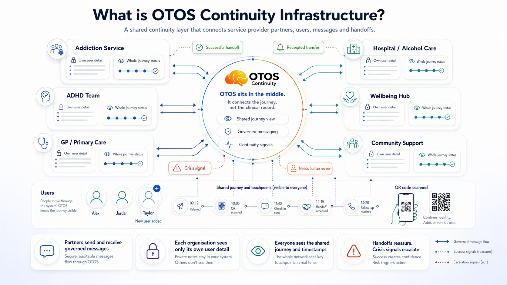
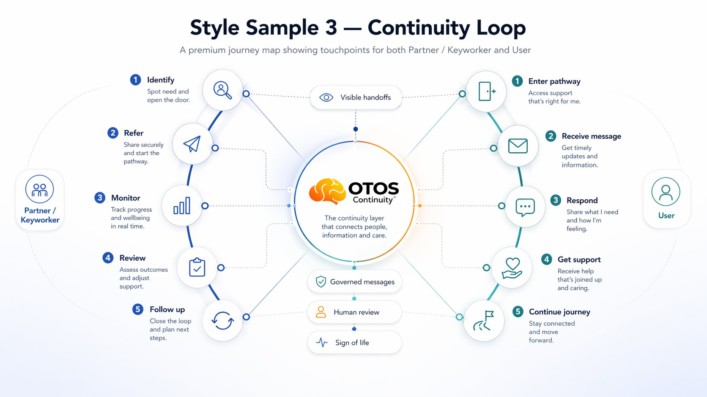

These are working drafts.
Tell us where we've got it wrong.
We've mapped what we think the pathway looks like. But you know your service better than we do. These diagrams are an invitation to a conversation — not a finished specification. Point at anything that doesn't fit how you work, and we redesign it with you.
Choose the view that fits
how you think about your service.
Each diagram shows the same continuity layer from a different angle. Pick the one that makes most sense for your role — and tell us if something looks wrong.

What this shows: The full picture of how OTOS sits in the middle — connecting Addiction Services, ADHD Team, Hospital, GP, Wellbeing Hub and Community Support, while each organisation keeps its own user records and OTOS carries only the shared journey view, governed messages and continuity signals.

What this shows: Three parallel tracks — Partner / Keyworker, OTOS Platform, and User — moving through Identify → Connect → Co-ordinate → Sustain → Outcome. Each track shows exactly what happens at each stage and who is responsible for each action.

What this shows: The circular journey — Partner / Keyworker on the left (Identify → Refer → Monitor → Review → Follow up), User on the right (Enter pathway → Receive message → Respond → Get support → Continue journey), with OTOS in the centre holding the connection.

What this shows: The 10-step journey from first partner meetings to 12-week NHS pilot delivery. Who's in the room at each meeting, what decision gets made, and what technical work runs in parallel. This is the roadmap — and you are in it.
These are working drafts. You are the expert.
If something in these diagrams doesn't fit how your service actually works — the terminology is wrong, a step is missing, a boundary isn't clear — that feedback is exactly what the scoping conversation is for. We are not selling you a finished system. We are inviting you to help build the right one.
Tell us what doesn't fit →Why ADHD first.
And what it costs to keep doing nothing.
Two infographics that set out the evidence behind the NIA framing and the economic case for early continuity intervention. Both are designed to be shared.

Neurologically Informed Addiction (NIA) — the clinical case: prevalence, the hidden overlap, the START study 61.3% figure, and how early identification changes the picture.

The Cost of Doing Nothing — £90,000 for 3-month rehab for 1 person vs £91,520 for the 12-week OTOS pre-pilot for 50 people. £44.44bn total annual burden. The scale of the prize.
One person. One year.
The costs spread outward.

What this shows: Conservative cost to the state per person with co-occurring ADHD and addiction: £40,070 per year. With repeat cycles: £100,000+. The ripple widens intergenerationally — ADHD is inherited, the waveform doubles.